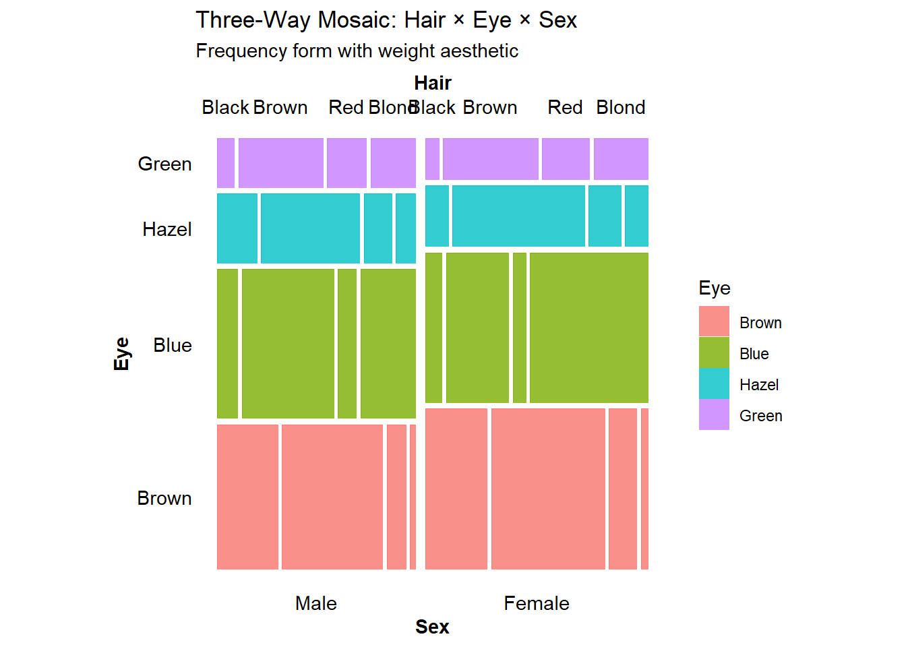
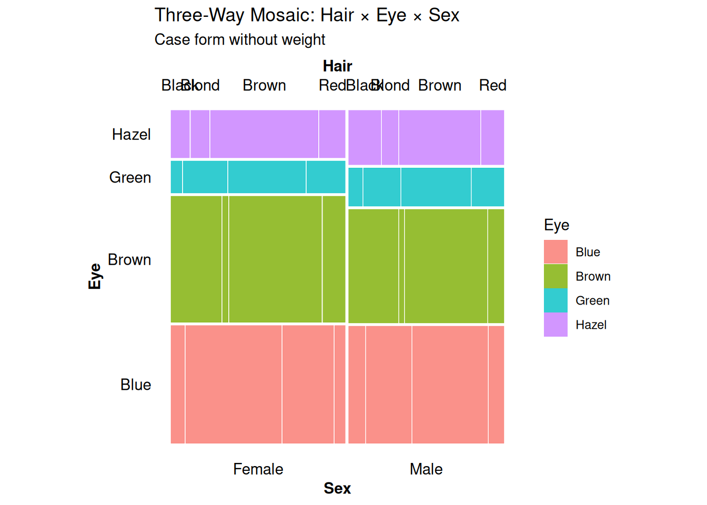
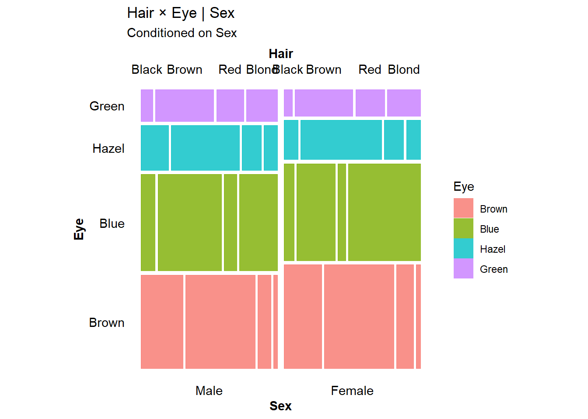
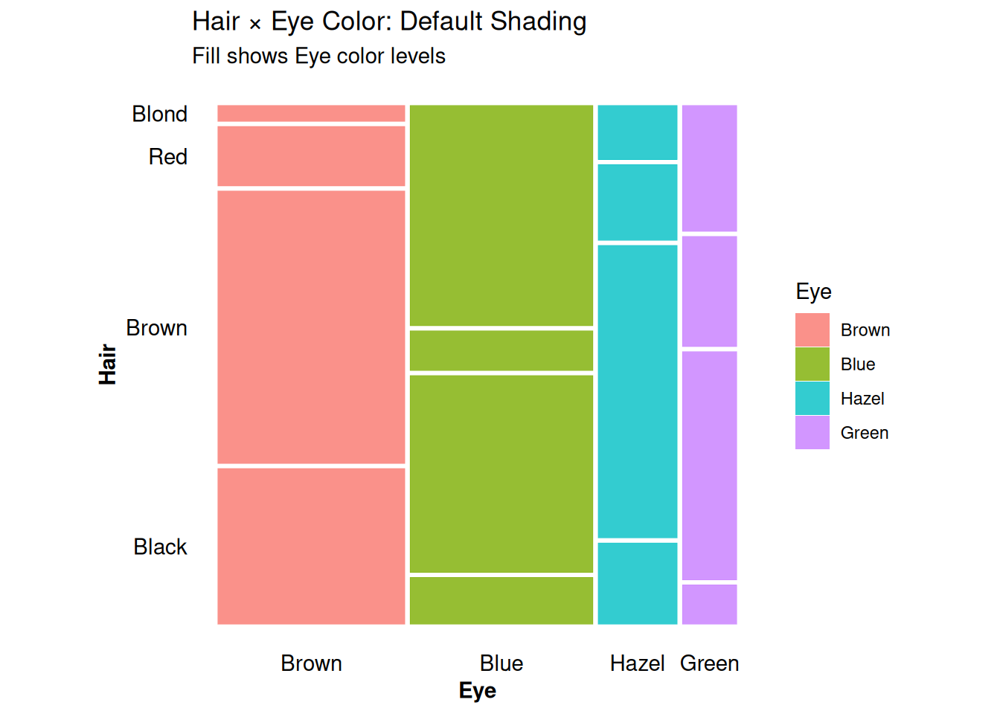
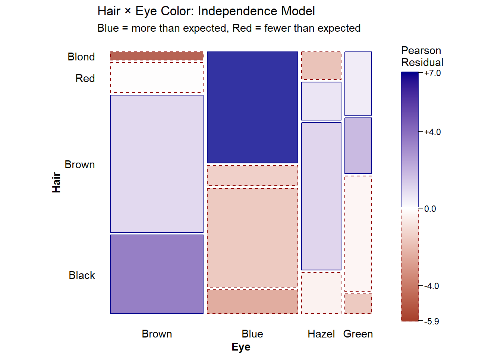
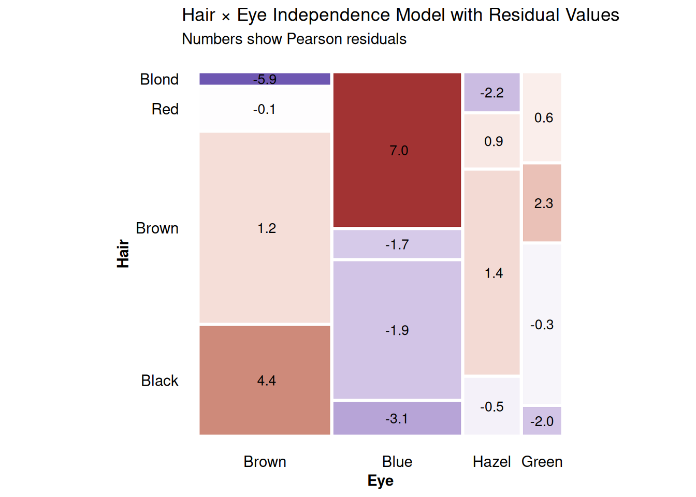
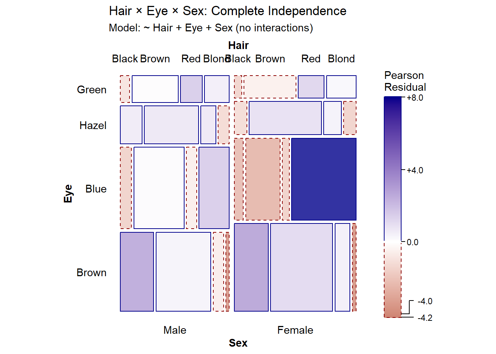
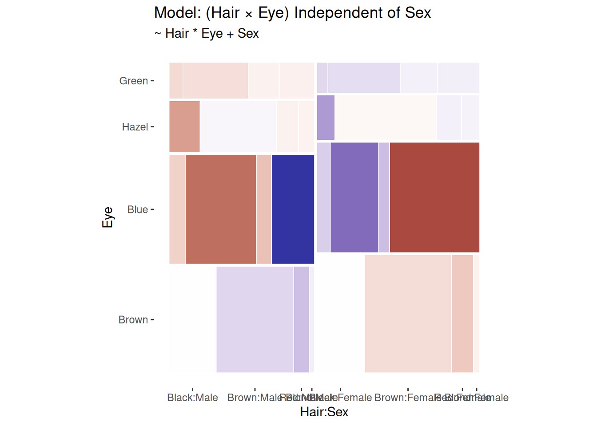
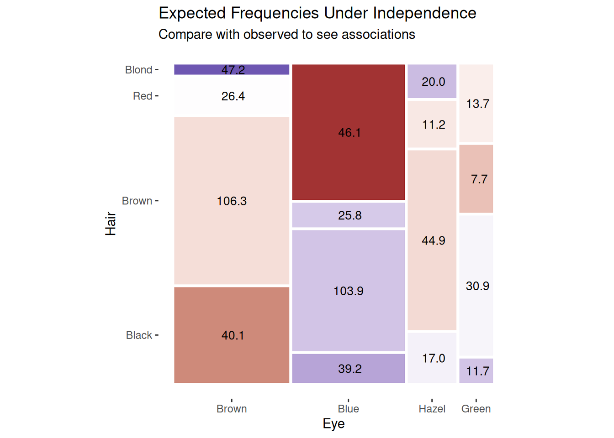
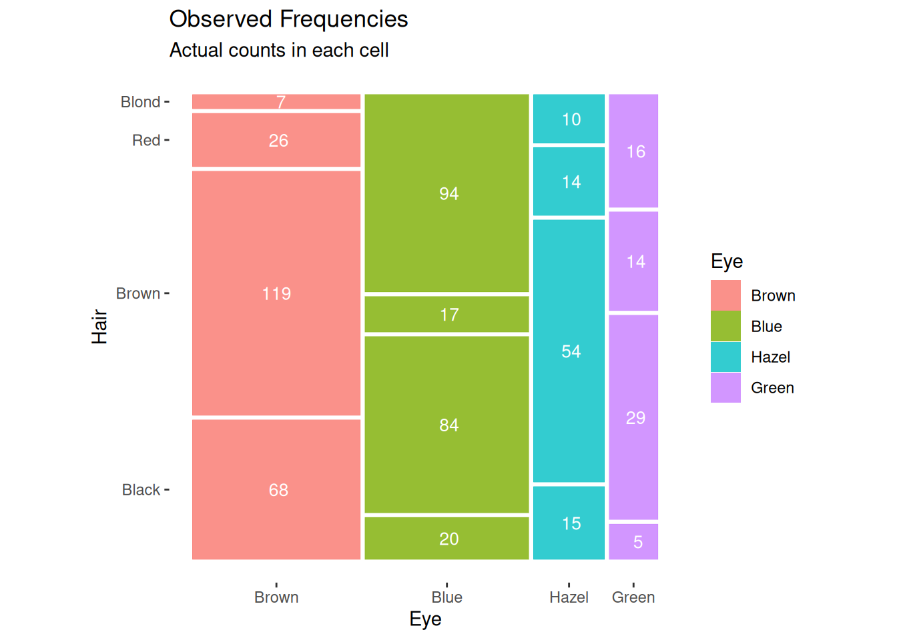

Three Forms of Frequency Tables for Mosaic Displays
Michael Friendly
2026-08-14
Source:vignettes/frequency-table-forms.Rmd
frequency-table-forms.RmdIntroduction
Categorical data can be represented in three fundamentally different forms, each with advantages for different purposes. Understanding these forms and how to convert between them is essential for effective visualization and analysis with mosaic plots. This vignette illustrates:
- The three forms of frequency tables (table form, frequency form, and case form)
- Conversions between these forms
-
Using
geom_mosaic()with each form - Comparing default shading vs. residual-based shading from loglinear models
We’ll use the classic HairEyeColor dataset throughout to
demonstrate these concepts with both two-way and three-way tables.
For a comprehensive treatment of these forms and conversions, see the vcdExtra vignette by Friendly & Meyer (2016).
The Three Forms
Table Form
Table form represents categorical data as an array or table object where: - Dimensions correspond to categorical variables - Elements contain cell frequencies - Dimension names provide variable and level information
This is the most compact representation and the natural output from
table() and xtabs().
# HairEyeColor is already in table form
str(HairEyeColor)
#> 'table' num [1:4, 1:4, 1:2] 32 53 10 3 11 50 10 30 10 25 ...
#> - attr(*, "dimnames")=List of 3
#> ..$ Hair: chr [1:4] "Black" "Brown" "Red" "Blond"
#> ..$ Eye : chr [1:4] "Brown" "Blue" "Hazel" "Green"
#> ..$ Sex : chr [1:2] "Male" "Female"
class(HairEyeColor)
#> [1] "table"
# Examine the 3-way table structure
HairEyeColor
#> , , Sex = Male
#>
#> Eye
#> Hair Brown Blue Hazel Green
#> Black 32 11 10 3
#> Brown 53 50 25 15
#> Red 10 10 7 7
#> Blond 3 30 5 8
#>
#> , , Sex = Female
#>
#> Eye
#> Hair Brown Blue Hazel Green
#> Black 36 9 5 2
#> Brown 66 34 29 14
#> Red 16 7 7 7
#> Blond 4 64 5 8
# Total observations
sum(HairEyeColor)
#> [1] 592The HairEyeColor dataset is a 4 × 4 × 2 contingency
table with 592 observations classified by hair color, eye color, and
sex.
Table form can also be displayed as a heatmap-style color
table, using vcdExtra::color_table(), which shades
each cell background by its frequency. This gives a quick visual sense
of where the data are concentrated, as a complement to the mosaic plots
introduced below – useful for readers less familiar with reading mosaic
displays.
color_table(HairEyeColor, shade = "freq")|
Eye
|
Total | |||||
|---|---|---|---|---|---|---|
| Brown | Blue | Hazel | Green | |||
| Black | Male | 32 | 11 | 10 | 3 | 56 |
| Female | 36 | 9 | 5 | 2 | 52 | |
| Brown | Male | 53 | 50 | 25 | 15 | 143 |
| Female | 66 | 34 | 29 | 14 | 143 | |
| Red | Male | 10 | 10 | 7 | 7 | 34 |
| Female | 16 | 7 | 7 | 7 | 37 | |
| Blond | Male | 3 | 30 | 5 | 8 | 46 |
| Female | 4 | 64 | 5 | 8 | 81 | |
| Total | 220 | 215 | 93 | 64 | 592 | |
Frequency Form
Frequency form is a data frame where: - Each row
represents one cell of the contingency table - Factor columns specify
the cell’s coordinates - A frequency column (typically
Freq) contains the count for that cell - Total observations
= sum(df$Freq)
This form is convenient for modeling and is the output from
as.data.frame() applied to tables.
# Convert table to frequency form
hair_freq <- as.data.frame(HairEyeColor)
head(hair_freq, 10)
#> Hair Eye Sex Freq
#> 1 Black Brown Male 32
#> 2 Brown Brown Male 53
#> 3 Red Brown Male 10
#> 4 Blond Brown Male 3
#> 5 Black Blue Male 11
#> 6 Brown Blue Male 50
#> 7 Red Blue Male 10
#> 8 Blond Blue Male 30
#> 9 Black Hazel Male 10
#> 10 Brown Hazel Male 25
nrow(hair_freq) # 32 cells in the 4 × 4 × 2 table
#> [1] 32
# Verify totals match
sum(hair_freq$Freq)
#> [1] 592Frequency form is ideal for: - Input to modeling functions
(glm(), loglm(), etc.) - Filtering specific
cells or combinations - Adding derived variables - Use with
ggplot2 via the weight aesthetic
Case Form
Case form represents data as: - Each row is one
individual observation - Factor columns contain the variable values for
that individual - No frequency column needed - Total observations =
nrow(df)
This is the “raw data” format and most intuitive for those familiar with data collection.
# Convert frequency form to case form using vcdExtra::expand.dft()
hair_case <- expand.dft(hair_freq, freq = "Freq")
head(hair_case, 10)
#> Hair Eye Sex
#> 1 Black Brown Male
#> 2 Black Brown Male
#> 3 Black Brown Male
#> 4 Black Brown Male
#> 5 Black Brown Male
#> 6 Black Brown Male
#> 7 Black Brown Male
#> 8 Black Brown Male
#> 9 Black Brown Male
#> 10 Black Brown Male
nrow(hair_case) # 592 individual observations
#> [1] 592
# Structure
str(hair_case)
#> 'data.frame': 592 obs. of 3 variables:
#> $ Hair: chr "Black" "Black" "Black" "Black" ...
#> $ Eye : chr "Brown" "Brown" "Brown" "Brown" ...
#> $ Sex : chr "Male" "Male" "Male" "Male" ...Case form is most natural when: - Working with individual-level data - Each observation represents one subject - No need to aggregate
Converting Between Forms
The table below summarizes conversion functions:
| From → To | Table | Frequency | Case |
|---|---|---|---|
| Table | — | as.data.frame() |
expand.dft() |
| Frequency | xtabs(Freq ~ ...) |
— | expand.dft() |
| Case |
table(), xtabs()
|
count(), xtabs()
|
— |
Note: These conversions are clearly untidy and hard
to remember which to use. They have now been implemented in a collection
of vcdExtra::as_*() functions which take whatever you give
it and return the desired form.
Examples
# Case → Frequency (count occurrences)
hair_case |>
count(Hair, Eye, Sex, name = "Freq") |>
head()
#> Hair Eye Sex Freq
#> 1 Black Blue Female 9
#> 2 Black Blue Male 11
#> 3 Black Brown Female 36
#> 4 Black Brown Male 32
#> 5 Black Green Female 2
#> 6 Black Green Male 3
# Frequency → Table
hair_table <- xtabs(Freq ~ Hair + Eye + Sex, data = hair_freq)
identical(hair_table, HairEyeColor)
#> [1] FALSE
# Table → Frequency (already shown)
# Frequency → Case (already shown)Using Each Form with geom_mosaic()
Working with the Three-Way Table: Hair × Eye × Sex
Let’s demonstrate how to use each of the three forms with
geom_mosaic() using the full HairEyeColor
dataset.
# From frequency form (most common)
ggplot(data = hair_freq) +
geom_mosaic(aes(weight = Freq, x = product(Hair, Eye, Sex), fill = Eye)) +
labs(title = "Three-Way Mosaic: Hair × Eye × Sex",
subtitle = "Frequency form with weight aesthetic")
# From case form
ggplot(data = hair_case) +
geom_mosaic(aes(x = product(Hair, Eye, Sex), fill = Eye)) +
labs(title = "Three-Way Mosaic: Hair × Eye × Sex",
subtitle = "Case form without weight")
Both forms produce identical plots. The key difference: -
Frequency form: Use weight = Freq in the
aesthetic - Case form: No weight needed (each row
counts as 1)
Note: Table form data must first be converted to frequency form using
as.data.frame() before use with
geom_mosaic().
Using Conditioning Variables
The conds aesthetic allows you to condition on one or
more variables:
# Condition on Sex
ggplot(data = hair_freq) +
geom_mosaic(aes(weight = Freq,
x = product(Hair, Eye),
conds = product(Sex),
fill = Eye)) +
labs(title = "Hair × Eye | Sex",
subtitle = "Conditioned on Sex")
Default Shading vs. Residual-Based Shading
One of the most powerful features of mosaic plots is residual-based shading, which highlights deviations from a statistical model. This allows us to see not just the data, but whether patterns are statistically meaningful.
Default Shading
By default, geom_mosaic() uses the fill
aesthetic to color tiles, typically showing one of the categorical
variables:
ggplot(data = hair_freq) +
geom_mosaic(aes(weight = Freq, x = product(Hair, Eye), fill = Eye)) +
labs(title = "Hair × Eye Color: Default Shading",
subtitle = "Fill shows Eye color levels")
This clearly shows the marginal and conditional distributions, but doesn’t tell us whether associations are statistically significant.
Residual-Based Shading
Residual-based shading fits a loglinear model to the data and colors tiles according to Pearson residuals:
where “expected” frequencies come from the fitted model.
- Blue tiles: Observed > Expected (positive association)
- Red tiles: Observed < Expected (negative association)
- Intensity: Magnitude of the residual
- |r| > 2: Statistically significant at approximately α = 0.05
Independence Model for Two-Way Table
For a two-way table, we can visualize just Hair and Eye color. The most common model is independence (main effects only):
ggplot(data = hair_freq) +
geom_mosaic(aes(weight = Freq, x = product(Hair, Eye)),
expected = "independence") +
scale_fill_residual() +
labs(title = "Hair × Eye Color: Independence Model",
subtitle = "Blue = more than expected, Red = fewer than expected")
The residual shading reveals: - Blue tiles (positive residuals): Black hair with brown eyes, blond hair with blue eyes occur more frequently than independence would predict - Red tiles (negative residuals): Black hair with blue eyes, blond hair with brown eyes occur less frequently - This indicates a significant association between hair and eye color
Adding Cell Values
We can display the actual residual values in each cell using
geom_mosaic_text():
ggplot(data = hair_freq) +
geom_mosaic(aes(weight = Freq, x = product(Hair, Eye)),
expected = "independence") +
scale_fill_residual() +
geom_mosaic_text(aes(weight = Freq, x = product(Hair, Eye)),
expected = "independence", # Must match!
display_values = "residual",
format_digits = 1,
size = 3.5,
colour = "black") +
labs(title = "Hair × Eye Independence Model with Residual Values",
subtitle = "Numbers show Pearson residuals")
Values greater than 2 in absolute value indicate significant departures from independence.
Independence Model for Three-Way Table
For the three-way table, the independence model tests whether all three variables are mutually independent:
ggplot(data = hair_freq) +
geom_mosaic(aes(weight = Freq, x = product(Hair, Eye, Sex)),
expected = "independence") +
scale_fill_residual() +
labs(title = "Hair × Eye × Sex: Complete Independence",
subtitle = "Model: ~ Hair + Eye + Sex (no interactions)")
Custom Models
You can specify custom loglinear models using formula syntax. For example, testing whether the Hair-Eye association differs by Sex:
# Model: Hair and Eye are associated, but independent of Sex
ggplot(data = hair_freq) +
geom_mosaic(aes(weight = Freq, x = product(Hair, Eye, Sex)),
expected = ~ Hair * Eye + Sex) +
scale_fill_residual() +
labs(title = "Model: (Hair × Eye) Independent of Sex",
subtitle = "~ Hair * Eye + Sex")
Residuals close to zero suggest this model fits reasonably well—the Hair-Eye association is similar for males and females.
Comparing Observed and Expected
We can also display the expected counts under a model:
ggplot(data = hair_freq) +
geom_mosaic(aes(weight = Freq, x = product(Hair, Eye)),
expected = "independence") +
scale_fill_residual() +
geom_mosaic_text(aes(weight = Freq, x = product(Hair, Eye)),
expected = "independence",
display_values = "expected",
format_digits = 1,
size = 3.5,
colour = "black") +
labs(title = "Expected Frequencies Under Independence",
subtitle = "Compare with observed to see associations")
And the observed counts:
ggplot(data = hair_freq) +
geom_mosaic(aes(weight = Freq, x = product(Hair, Eye), fill = Eye)) +
geom_mosaic_text(aes(weight = Freq, x = product(Hair, Eye)),
display_values = "observed",
format_digits = 0,
size = 3.5,
colour = "white") +
labs(title = "Observed Frequencies",
subtitle = "Actual counts in each cell")
Summary
Key Takeaways
-
Three forms of frequency data serve different
purposes:
- Table form: Compact, ideal for arrays and mathematical operations
-
Frequency form: Versatile, works well with modeling
and
ggplot2 - Case form: Intuitive, represents raw individual-level data
-
Converting between forms is straightforward:
- Use
as.data.frame()for table → frequency - Use
expand.dft()for frequency → case - Use
xtabs()ortable()for case/frequency → table
- Use
-
Using with
geom_mosaic():- Table/frequency forms require
weight = Freq - Case form works directly (no weight)
- All forms produce identical visualizations
- Table/frequency forms require
-
Two types of shading:
-
Default: Uses
fillaesthetic to show variable levels -
Residual-based: Uses
expectedparameter to fit models and shade by Pearson residuals
-
Default: Uses
-
Residual shading is powerful for:
- Identifying statistically significant associations
- Testing specific hypotheses about independence
- Comparing observed patterns to theoretical models
Recommendations
-
For visualization: Frequency form with
weightaesthetic is most flexible -
For modeling: Frequency form works with
glm(),loglm(), etc. - For raw data: Case form is most intuitive
-
For residual plots: Always use
scale_fill_residual()and consider addinggeom_mosaic_text()withdisplay_values = "residual"
References
- Friendly, M. (1994). “Mosaic Displays for Multi-Way Contingency Tables.” Journal of the American Statistical Association, 89(425), 190-200.
- Friendly, M., & Meyer, D. (2016). Discrete Data Analysis with R. Chapman and Hall/CRC.
- Meyer, D., Zeileis, A., & Hornik, K. (2006). “The Strucplot Framework: Visualizing Multi-way Contingency Tables with vcd.” Journal of Statistical Software, 17(3), 1-48.
- Zeileis, A., Meyer, D., & Hornik, K. (2007). “Residual-based Shadings for Visualizing (Conditional) Independence.” Journal of Computational and Graphical Statistics, 16(3), 507-525.
Session Info
sessionInfo()
#> R version 4.6.1 (2026-06-24)
#> Platform: x86_64-pc-linux-gnu
#> Running under: Ubuntu 24.04.4 LTS
#>
#> Matrix products: default
#> BLAS: /usr/lib/x86_64-linux-gnu/openblas-pthread/libblas.so.3
#> LAPACK: /usr/lib/x86_64-linux-gnu/openblas-pthread/libopenblasp-r0.3.26.so; LAPACK version 3.12.0
#>
#> locale:
#> [1] LC_CTYPE=C.UTF-8 LC_NUMERIC=C LC_TIME=C.UTF-8
#> [4] LC_COLLATE=C.UTF-8 LC_MONETARY=C.UTF-8 LC_MESSAGES=C.UTF-8
#> [7] LC_PAPER=C.UTF-8 LC_NAME=C LC_ADDRESS=C
#> [10] LC_TELEPHONE=C LC_MEASUREMENT=C.UTF-8 LC_IDENTIFICATION=C
#>
#> time zone: UTC
#> tzcode source: system (glibc)
#>
#> attached base packages:
#> [1] grid stats graphics grDevices utils datasets methods
#> [8] base
#>
#> other attached packages:
#> [1] dplyr_1.2.1 vcdExtra_0.9.7 gnm_1.1-5 vcd_1.4-14
#> [5] ggmosaic2_0.5.1 ggplot2_4.0.3
#>
#> loaded via a namespace (and not attached):
#> [1] gtable_0.3.6 xfun_0.60 bslib_0.12.0 htmlwidgets_1.6.4
#> [5] websocket_1.4.4 ggrepel_0.9.8 processx_3.9.0 lattice_0.22-9
#> [9] vctrs_0.7.3 tools_4.6.1 ps_1.9.3 generics_0.1.4
#> [13] tibble_3.3.1 ca_0.71.1 pkgconfig_2.0.3 Matrix_1.7-5
#> [17] data.table_1.18.4 RColorBrewer_1.1-3 S7_0.2.2 desc_1.4.3
#> [21] gt_1.3.0 lifecycle_1.0.5 compiler_4.6.1 farver_2.1.2
#> [25] textshaping_1.0.5 chromote_0.5.1 htmltools_0.5.9 sass_0.4.10
#> [29] yaml_2.3.12 plotly_4.12.1 pillar_1.11.1 pkgdown_2.2.1
#> [33] later_1.4.8 jquerylib_0.1.4 tidyr_1.3.2 MASS_7.3-65
#> [37] cachem_1.1.0 webshot2_0.1.2 tidyselect_1.2.1 digest_0.6.39
#> [41] purrr_1.2.2 qvcalc_1.0.4 forcats_1.0.1 fastmap_1.2.0
#> [45] colorspace_2.1-3 cli_3.6.6 magrittr_2.0.5 productplots_0.1.2
#> [49] relimp_1.0-5 withr_3.0.3 scales_1.4.0 promises_1.5.0
#> [53] rmarkdown_2.31 httr_1.4.8 otel_0.2.0 nnet_7.3-20
#> [57] ragg_1.5.2 zoo_1.9-0 evaluate_1.0.5 knitr_1.51
#> [61] lmtest_0.9-40 viridisLite_0.4.3 rlang_1.3.0 Rcpp_1.1.2
#> [65] glue_1.8.1 xml2_1.6.0 jsonlite_2.0.0 R6_2.6.1
#> [69] plyr_1.8.9 systemfonts_1.3.2 fs_2.1.0